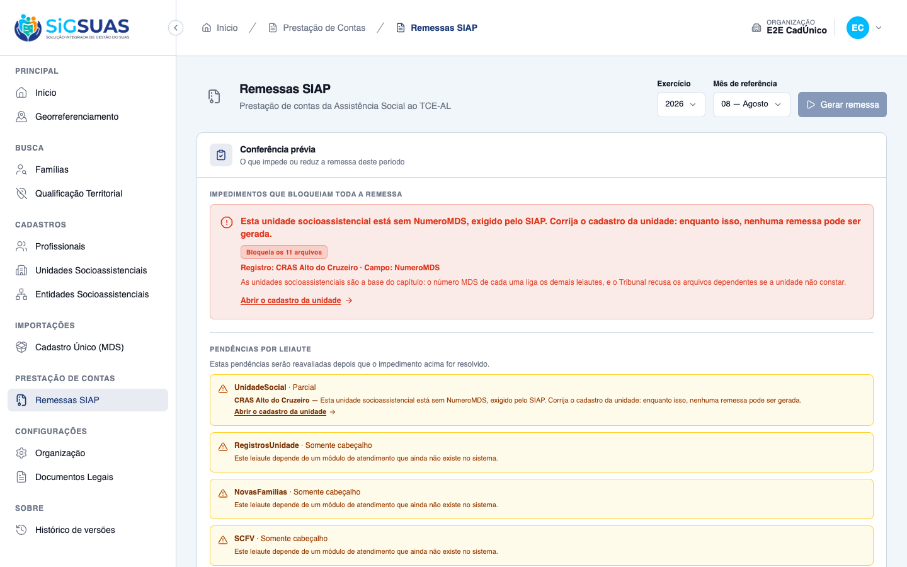
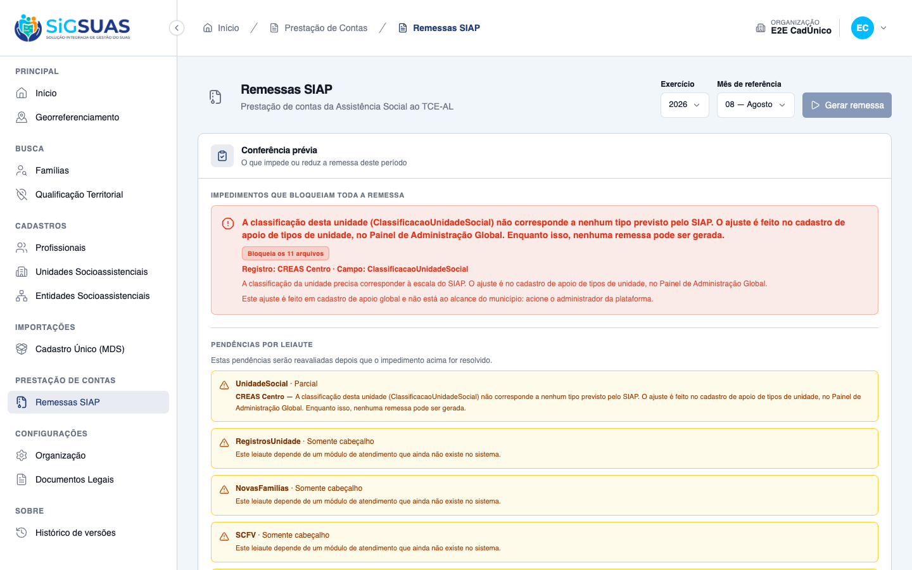
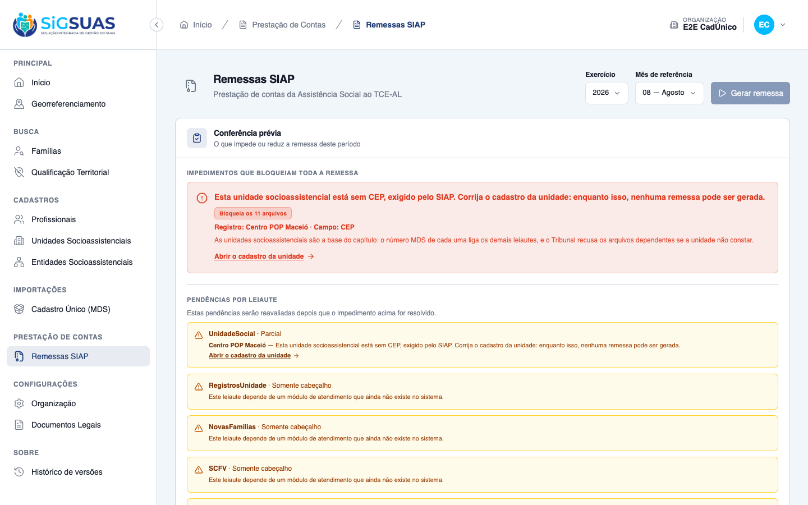

Relatório de Critérios de Aceite — HU #10370 (US-SIAP-03)
Resumo
11 critérios avaliados, 11 atendidos — nenhum reprovado. Esta HU é atípica no formato da evidência: oito critérios (CA01–CA06, CA10 e CA11) falam do CONTEÚDO do UnidadeSocial.xml, e a evidência de primeira classe deles é o próprio trecho do arquivo — cada XML embutido neste relatório foi extraído do zip de uma remessa realmente gerada pelo endpoint POST client/siap-remittances, e está preservado em xml/. Três critérios (CA07, CA08 e CA09) são de bloqueio e têm manifestação em tela: além do payload do 422 e da conferência prévia (em payloads/), foram capturados no painel de Remessas SIAP do client — ver os prints nas seções CA07, CA08, CA09. Suíte anexa: 99 testes (407 asserções) em --filter=Siap, todos verdes.
| CA | Critério | Status |
|---|---|---|
| CA01 | Unidades do município no leiaute (happy path) | ATENDIDO · automatizado |
| CA02 | Unidade paralisada entra na remessa | ATENDIDO · automatizado |
| CA03 | Unidade extinta no exercício da referência | ATENDIDO · automatizado |
| CA04 | Unidade extinta em exercício anterior | ATENDIDO · automatizado |
| CA05 | Classificação traduzida para o domínio do SIAP | ATENDIDO · automatizado |
| CA06 | Endereço longo é abreviado sem perder o essencial | ATENDIDO · automatizado |
| CA07 | Bloqueio por unidade sem número MDS | ATENDIDO · navegador + automatizado |
| CA08 | Bloqueio por classificação sem correspondência no SIAP | ATENDIDO · navegador + automatizado |
| CA09 | Bloqueio por endereço sem CEP | ATENDIDO · navegador + automatizado |
| CA10 | Município sem unidades | ATENDIDO · automatizado |
| CA11 | Isolamento entre municípios | ATENDIDO · automatizado |
CA01 — Unidades do município no leiaute (happy path) ATENDIDO · automatizado
Critério (Gherkin): Dado que meu município tem 3 unidades socioassistenciais cadastradas, todas completas Quando a remessa da referência 08/2026 for gerada Então o leiaute UnidadeSocial traz 3 linhas E cada linha apresenta NumeroMDS, NomeUnidadeSocial, TipoLocalizacao, EnderecoUnidadeSocial, CEP, SituacaoUnidadeSocial e ClassificacaoUnidadeSocial
Como foi testado: Três unidades completas (CRAS urbano, CREAS urbano e Centro POP rural) no tenant; POST client/siap-remittances com exercise=2026 e reference_month=8; o UnidadeSocial.xml abaixo foi extraído do zip da remessa realmente gerada, não montado à mão.
<?xml version="1.0"?>
<SIAP>
<Codigo>004821</Codigo>
<Exercicio>2026</Exercicio>
<Mes>08</Mes>
<UnidadeSocial>
<NumeroMDS>2704302000123</NumeroMDS>
<NomeUnidadeSocial>CRAS Alto do Cruzeiro</NomeUnidadeSocial>
<TipoLocalizacao>1</TipoLocalizacao>
<EnderecoUnidadeSocial>Rua, das Flores, 123, Centro, Maceió</EnderecoUnidadeSocial>
<CEP>57000000</CEP>
<SituacaoUnidadeSocial>1</SituacaoUnidadeSocial>
<ClassificacaoUnidadeSocial>1</ClassificacaoUnidadeSocial>
</UnidadeSocial>
<UnidadeSocial>
<NumeroMDS>2704302000456</NumeroMDS>
<NomeUnidadeSocial>CREAS Centro</NomeUnidadeSocial>
<TipoLocalizacao>1</TipoLocalizacao>
<EnderecoUnidadeSocial>Avenida, Fernandes Lima, 900, Farol, Maceió</EnderecoUnidadeSocial>
<CEP>57055000</CEP>
<SituacaoUnidadeSocial>1</SituacaoUnidadeSocial>
<ClassificacaoUnidadeSocial>2</ClassificacaoUnidadeSocial>
</UnidadeSocial>
<UnidadeSocial>
<NumeroMDS>2704302000789</NumeroMDS>
<NomeUnidadeSocial>Centro POP Maceió</NomeUnidadeSocial>
<TipoLocalizacao>2</TipoLocalizacao>
<EnderecoUnidadeSocial>Rua, do Sol, 45, Jacintinho, Maceió</EnderecoUnidadeSocial>
<CEP>57040000</CEP>
<SituacaoUnidadeSocial>1</SituacaoUnidadeSocial>
<ClassificacaoUnidadeSocial>3</ClassificacaoUnidadeSocial>
</UnidadeSocial>
</SIAP>
- O arquivo traz exatamente 3 blocos <UnidadeSocial> — um por unidade cadastrada (RN01).
- Os 7 campos do item 15.1 do Manual aparecem nas 3 linhas, nenhum omitido: NumeroMDS, NomeUnidadeSocial, TipoLocalizacao, EnderecoUnidadeSocial, CEP, SituacaoUnidadeSocial e ClassificacaoUnidadeSocial.
- TipoLocalizacao distingue urbana (1) das duas primeiras e rural (2) do Centro POP — o campo é lido do cadastro, não fixado (RN05).
- O cabeçalho carrega o CARDUG 004821, o exercício 2026 e o mês 08, como a #10367 fixou.
- Teste: “it brings every unit of the municipality with the seven fields of the Manual (CA01)” — assere substr_count($xml, '<UnidadeSocial>') === 3 e a presença dos 7 campos em cada linha.
Evidência por cobertura automatizada — ver Anexo.
CA02 — Unidade paralisada entra na remessa ATENDIDO · automatizado
Critério (Gherkin): Dado que uma das unidades está com situação "paralisada" no cadastro Quando a remessa for gerada Então essa unidade consta do leiaute com SituacaoUnidadeSocial=2, e não é omitida
Como foi testado: Unidade “CRAS Benedito Bentes” com social_unit_status.code = '002' (Paralisada); remessa gerada na referência 08/2026.
<?xml version="1.0"?>
<SIAP>
<Codigo>004821</Codigo>
<Exercicio>2026</Exercicio>
<Mes>08</Mes>
<UnidadeSocial>
<NumeroMDS>2704302000222</NumeroMDS>
<NomeUnidadeSocial>CRAS Benedito Bentes</NomeUnidadeSocial>
<TipoLocalizacao>1</TipoLocalizacao>
<EnderecoUnidadeSocial>Rua, das Flores, 123, Centro, Maceió</EnderecoUnidadeSocial>
<CEP>57000000</CEP>
<SituacaoUnidadeSocial>2</SituacaoUnidadeSocial>
<ClassificacaoUnidadeSocial>1</ClassificacaoUnidadeSocial>
</UnidadeSocial>
</SIAP>
- A unidade paralisada CONSTA do arquivo — a remessa não a omite (RN02).
- SituacaoUnidadeSocial = 2, o código do Manual para “paralisada”.
- Teste: “it keeps the paralysed unit inside the remittance (CA02)”.
Evidência por cobertura automatizada — ver Anexo.
CA03 — Unidade extinta no exercício da referência ATENDIDO · automatizado
Critério (Gherkin): Dado que uma unidade teve activity_end_date registrado em março de 2026 Quando a remessa da referência 08/2026 for gerada Então essa unidade consta do leiaute com SituacaoUnidadeSocial=3
Como foi testado: “CRAS Vergel”, activity_end_date = 2026-03-10, referência 08/2026. O mesmo arquivo cobre CA03 e CA04 — as três unidades abaixo diferem só pela data de encerramento.
<?xml version="1.0"?>
<SIAP>
<Codigo>004821</Codigo>
<Exercicio>2026</Exercicio>
<Mes>08</Mes>
<UnidadeSocial>
<NumeroMDS>2704302000333</NumeroMDS>
<NomeUnidadeSocial>CRAS Vergel (extinto em marco/2026)</NomeUnidadeSocial>
<TipoLocalizacao>1</TipoLocalizacao>
<EnderecoUnidadeSocial>Rua, das Flores, 123, Centro, Maceió</EnderecoUnidadeSocial>
<CEP>57000000</CEP>
<SituacaoUnidadeSocial>3</SituacaoUnidadeSocial>
<ClassificacaoUnidadeSocial>1</ClassificacaoUnidadeSocial>
</UnidadeSocial>
<UnidadeSocial>
<NumeroMDS>2704302000444</NumeroMDS>
<NomeUnidadeSocial>CRAS Poço (extinto em novembro/2024)</NomeUnidadeSocial>
<TipoLocalizacao>1</TipoLocalizacao>
<EnderecoUnidadeSocial>Rua, do Ouro, 77, Poço, Maceió</EnderecoUnidadeSocial>
<CEP>57000000</CEP>
<SituacaoUnidadeSocial>4</SituacaoUnidadeSocial>
<ClassificacaoUnidadeSocial>1</ClassificacaoUnidadeSocial>
</UnidadeSocial>
<UnidadeSocial>
<NumeroMDS>2704302000555</NumeroMDS>
<NomeUnidadeSocial>CRAS Trapiche (lookup 003, data de 2024 — D04)</NomeUnidadeSocial>
<TipoLocalizacao>1</TipoLocalizacao>
<EnderecoUnidadeSocial>Rua, da Paz, 15, Trapiche, Maceió</EnderecoUnidadeSocial>
<CEP>57000000</CEP>
<SituacaoUnidadeSocial>4</SituacaoUnidadeSocial>
<ClassificacaoUnidadeSocial>1</ClassificacaoUnidadeSocial>
</UnidadeSocial>
</SIAP>
- A unidade encerrada dentro do exercício da referência sai com SituacaoUnidadeSocial = 3 (1ª linha do arquivo, NumeroMDS 2704302000333).
- O valor é DERIVADO da data comparada ao exercício (D04), não copiado do código do lookup.
- Teste: “it emits the unit extinct within the reference exercise as 3 (CA03)”.
Evidência por cobertura automatizada — ver Anexo.
CA04 — Unidade extinta em exercício anterior ATENDIDO · automatizado
Critério (Gherkin): Dado que uma unidade teve activity_end_date registrado em novembro de 2024 Quando a remessa da referência 08/2026 for gerada Então essa unidade consta do leiaute com SituacaoUnidadeSocial=4
Como foi testado: “CRAS Poço”, activity_end_date = 2024-11-20, referência 08/2026. A terceira unidade do arquivo é o caso da D04: o município marcou o lookup como “extinta no ano atual” (003) mas encerrou em 2024 — a data vence o código.
<?xml version="1.0"?>
<SIAP>
<Codigo>004821</Codigo>
<Exercicio>2026</Exercicio>
<Mes>08</Mes>
<UnidadeSocial>
<NumeroMDS>2704302000333</NumeroMDS>
<NomeUnidadeSocial>CRAS Vergel (extinto em marco/2026)</NomeUnidadeSocial>
<TipoLocalizacao>1</TipoLocalizacao>
<EnderecoUnidadeSocial>Rua, das Flores, 123, Centro, Maceió</EnderecoUnidadeSocial>
<CEP>57000000</CEP>
<SituacaoUnidadeSocial>3</SituacaoUnidadeSocial>
<ClassificacaoUnidadeSocial>1</ClassificacaoUnidadeSocial>
</UnidadeSocial>
<UnidadeSocial>
<NumeroMDS>2704302000444</NumeroMDS>
<NomeUnidadeSocial>CRAS Poço (extinto em novembro/2024)</NomeUnidadeSocial>
<TipoLocalizacao>1</TipoLocalizacao>
<EnderecoUnidadeSocial>Rua, do Ouro, 77, Poço, Maceió</EnderecoUnidadeSocial>
<CEP>57000000</CEP>
<SituacaoUnidadeSocial>4</SituacaoUnidadeSocial>
<ClassificacaoUnidadeSocial>1</ClassificacaoUnidadeSocial>
</UnidadeSocial>
<UnidadeSocial>
<NumeroMDS>2704302000555</NumeroMDS>
<NomeUnidadeSocial>CRAS Trapiche (lookup 003, data de 2024 — D04)</NomeUnidadeSocial>
<TipoLocalizacao>1</TipoLocalizacao>
<EnderecoUnidadeSocial>Rua, da Paz, 15, Trapiche, Maceió</EnderecoUnidadeSocial>
<CEP>57000000</CEP>
<SituacaoUnidadeSocial>4</SituacaoUnidadeSocial>
<ClassificacaoUnidadeSocial>1</ClassificacaoUnidadeSocial>
</UnidadeSocial>
</SIAP>
- “CRAS Poço” (2704302000444) sai com SituacaoUnidadeSocial = 4 — encerramento em exercício anterior.
- “CRAS Trapiche” (2704302000555) também sai com 4, apesar de o cadastro dizer '003' (extinta no ano atual): declarar 3 em 2026 afirmaria ao Tribunal uma extinção que não ocorreu naquele exercício (D04).
- O arquivo tem exatamente um 3 e dois 4 — verificado por contagem no gerador da evidência.
- Testes: “it emits the unit extinct in a previous exercise as 4 (CA04)” e “it lets the end date override the status code chosen in the lookup (CA04b / D04)”.
- Contraponto registrado (D05): extinta SEM data, ou com encerramento POSTERIOR ao exercício, não é arbitrada — vira pendência bloqueante (“it turns the extinct unit without a usable end date into a blocking pendency (CA04c / D05)”).
Evidência por cobertura automatizada — ver Anexo.
CA05 — Classificação traduzida para o domínio do SIAP ATENDIDO · automatizado
Critério (Gherkin): Dado que uma unidade está cadastrada como CREAS e outra como Centro POP Quando a remessa for gerada Então a primeira consta com ClassificacaoUnidadeSocial=2 e a segunda com 3
Como foi testado: Duas unidades no mesmo tenant: uma com social_unit_types.code = '002' (CREAS) e outra com '003' (Centro POP).
<?xml version="1.0"?>
<SIAP>
<Codigo>004821</Codigo>
<Exercicio>2026</Exercicio>
<Mes>08</Mes>
<UnidadeSocial>
<NumeroMDS>2704302000456</NumeroMDS>
<NomeUnidadeSocial>CREAS Centro</NomeUnidadeSocial>
<TipoLocalizacao>1</TipoLocalizacao>
<EnderecoUnidadeSocial>Avenida, Fernandes Lima, 900, Farol, Maceió</EnderecoUnidadeSocial>
<CEP>57000000</CEP>
<SituacaoUnidadeSocial>1</SituacaoUnidadeSocial>
<ClassificacaoUnidadeSocial>2</ClassificacaoUnidadeSocial>
</UnidadeSocial>
<UnidadeSocial>
<NumeroMDS>2704302000789</NumeroMDS>
<NomeUnidadeSocial>Centro POP Maceió</NomeUnidadeSocial>
<TipoLocalizacao>1</TipoLocalizacao>
<EnderecoUnidadeSocial>Rua, do Sol, 45, Jacintinho, Maceió</EnderecoUnidadeSocial>
<CEP>57000000</CEP>
<SituacaoUnidadeSocial>1</SituacaoUnidadeSocial>
<ClassificacaoUnidadeSocial>3</ClassificacaoUnidadeSocial>
</UnidadeSocial>
</SIAP>
- CREAS Centro → ClassificacaoUnidadeSocial = 2.
- Centro POP Maceió → ClassificacaoUnidadeSocial = 3.
- A tradução é feita por match explícito em SiapDomainMap (escala 1..5 e 99), e não pelo código do cadastro: código sem correspondência vira pendência bloqueante em vez de valor inválido (CA08).
- Testes: “it translates the unit classification to the SIAP domain (CA05)” e “it maps social unit types to the SIAP classification” (unitário).
Evidência por cobertura automatizada — ver Anexo.
CA06 — Endereço longo é abreviado sem perder o essencial ATENDIDO · automatizado
Critério (Gherkin): Dado que o endereço de uma unidade, com ponto de referência e complemento, passa de 255 caracteres Quando a remessa for gerada Então EnderecoUnidadeSocial cabe em 255 caracteres, tendo sido suprimido primeiro o ponto de referência e, se ainda necessário, o complemento E o logradouro, o número, o bairro e o município continuam presentes
Como foi testado: Duas unidades no mesmo arquivo: A com ponto de referência de 300 caracteres (só o ponto precisa sair) e B com ponto de 100 + complemento de 250 (os dois precisam sair). O antes é a composição completa da RN09 (tipo de logradouro, logradouro, número, complemento, ponto de referência, bairro, município); o depois é o valor que foi ao arquivo.
HU #10370 — CA06: endereço longo abreviado sem perder o essencial (RN09 / D06) ==================================================================================================== CENÁRIO A — ponto de referência de 300 caracteres ANTES (346 caracteres, composição completa da RN09) Rua, das Flores, 123, Sala 4, PPPPPPPPPPPPPPPPPPPPPPPPPPPPPPPPPPPPPPPPPPPPPPPPPPPPPPPPPPPPPPPPPPPPPPPPPPPPPPPPPPPPPPPPPPPPPPPPPPPPPPPPPPPPPPPPPPPPPPPPPPPPPPPPPPPPPPPPPPPPPPPPPPPPPPPPPPPPPPPPPPPPPPPPPPPPPPPPPPPPPPPPPPPPPPPPPPPPPPPPPPPPPPPPPPPPPPPPPPPPPPPPPPPPPPPPPPPPPPPPPPPPPPPPPPPPPPPPPPPPPPPPPPPPPPPPPPPPPPPPPPPPPPPPPPPPPPPPPPPP, Centro, Maceió DEPOIS (44 caracteres, valor de EnderecoUnidadeSocial no XML) Rua, das Flores, 123, Sala 4, Centro, Maceió ✓ cabe em 255 : sim ✓ ponto de referência suprimido : sim ✓ complemento preservado (coube) : sim ✓ logradouro preservado : sim ✓ número preservado : sim ✓ bairro preservado : sim ✓ município preservado : sim ---------------------------------------------------------------------------------------------------- CENÁRIO B — ponto de referência de 100 + complemento de 250 caracteres ANTES (384 caracteres, composição completa da RN09) Rua, do Ouro, 77, CCCCCCCCCCCCCCCCCCCCCCCCCCCCCCCCCCCCCCCCCCCCCCCCCCCCCCCCCCCCCCCCCCCCCCCCCCCCCCCCCCCCCCCCCCCCCCCCCCCCCCCCCCCCCCCCCCCCCCCCCCCCCCCCCCCCCCCCCCCCCCCCCCCCCCCCCCCCCCCCCCCCCCCCCCCCCCCCCCCCCCCCCCCCCCCCCCCCCCCCCCCCCCCCCCCCCCCCCCCCCCCCCCCCCCCCCCCCCCCCCCCCCCCCCC, PPPPPPPPPPPPPPPPPPPPPPPPPPPPPPPPPPPPPPPPPPPPPPPPPPPPPPPPPPPPPPPPPPPPPPPPPPPPPPPPPPPPPPPPPPPPPPPPPPPP, Poço, Maceió DEPOIS (30 caracteres, valor de EnderecoUnidadeSocial no XML) Rua, do Ouro, 77, Poço, Maceió ✓ cabe em 255 : sim ✓ ponto de referência suprimido : sim ✓ complemento suprimido (não coube): sim ✓ logradouro preservado : sim ✓ número preservado : sim ✓ bairro preservado : sim ✓ município preservado : sim ----------------------------------------------------------------------------------------------------
<?xml version="1.0"?>
<SIAP>
<Codigo>004821</Codigo>
<Exercicio>2026</Exercicio>
<Mes>08</Mes>
<UnidadeSocial>
<NumeroMDS>2704302000666</NumeroMDS>
<NomeUnidadeSocial>CRAS Flores</NomeUnidadeSocial>
<TipoLocalizacao>1</TipoLocalizacao>
<EnderecoUnidadeSocial>Rua, das Flores, 123, Sala 4, Centro, Maceió</EnderecoUnidadeSocial>
<CEP>57000000</CEP>
<SituacaoUnidadeSocial>1</SituacaoUnidadeSocial>
<ClassificacaoUnidadeSocial>1</ClassificacaoUnidadeSocial>
</UnidadeSocial>
<UnidadeSocial>
<NumeroMDS>2704302000777</NumeroMDS>
<NomeUnidadeSocial>CRAS Poço</NomeUnidadeSocial>
<TipoLocalizacao>1</TipoLocalizacao>
<EnderecoUnidadeSocial>Rua, do Ouro, 77, Poço, Maceió</EnderecoUnidadeSocial>
<CEP>57000000</CEP>
<SituacaoUnidadeSocial>1</SituacaoUnidadeSocial>
<ClassificacaoUnidadeSocial>1</ClassificacaoUnidadeSocial>
</UnidadeSocial>
</SIAP>
- Cenário A: 346 caracteres antes → 44 depois. O ponto de referência sumiu; o complemento “Sala 4” PERMANECE, porque a string já coube sem ele ser tocado.
- Cenário B: 384 caracteres antes → 30 depois. Ponto de referência E complemento suprimidos, nessa ordem.
- Nos dois casos logradouro, número, bairro e município continuam presentes — que é a exigência literal do critério e o que o corte cego em 255 destruiria (o truncamento devolveria os 255 primeiros caracteres, sem bairro nem município no fim).
- A supressão acontece ANTES do truncamento (D06); SiapValueFormatter::text() permanece só como rede de segurança — no caso patológico (logradouro de 300 caracteres) o valor sai com exatamente 255, coberto por “it never lets the address exceed 255 characters, not even in the worst case (CA06c)”.
- Testes: “it suppresses the reference point first and keeps the complement (CA06)”, “it also suppresses the complement when the reference point is not enough (CA06b)” e “it emits the unit address in the Manual order, with street number and territorial unit”.
Evidência por cobertura automatizada — ver Anexo.
CA07 — Bloqueio por unidade sem número MDS ATENDIDO · navegador + automatizado
Critério (Gherkin): Dado que a unidade "CRAS Alto do Cruzeiro" está sem o número MDS informado Quando eu solicitar a geração da remessa Então a remessa não é gerada E a conferência prévia aponta pendência impeditiva no leiaute UnidadeSocial identificando essa unidade e o campo NumeroMDS
Como foi testado: Tenant com CARDUG 004821 válido (senão o bloqueio do CARDUG mascararia este) e uma única unidade, “CRAS Alto do Cruzeiro”, com mds_number = NULL. POST client/siap-remittances seguido de GET client/siap-remittances/pre-check?exercise=2026&reference_month=8.
Por que um de cada vez: qualquer unidade incompleta bloqueia a remessa inteira (D02). Se os três defeitos coexistissem, não daria para afirmar qual deles produziu a recusa — então cada critério foi demonstrado isoladamente: nos payloads, um tenant por cenário; no navegador, a mesma unidade “CRAS Alto do Cruzeiro” foi levada a um defeito de cada vez (MDS nulo → tipo fora da escala → CEP nulo), com a conferência prévia recarregada entre eles.
No navegador: painel do tenant → Prestação de Contas → Remessas SIAP, organização “E2E CadÚnico”, referência 08/2026, perfil Master, com o CARDUG 004821 já informado nos parâmetros TCE/AL (sem ele o impedimento do CARDUG mascararia o da unidade). Os dados usados nas capturas foram semeados só para a evidência e removidos da base ao final.
{
"post_siap_remittances": {
"status": 422,
"body": {
"message": "The SIAP remittance cannot be generated: 1 social unit has an incomplete record for SIAP. Check the missing data in the pre-check screen.",
"errors": {
"social_units": [
"The SIAP remittance cannot be generated: 1 social unit has an incomplete record for SIAP. Check the missing data in the pre-check screen."
]
}
}
},
"remessas_criadas": 0,
"pre_check_blocking": {
"can_generate": false,
"pendencies": [
{
"scope": "blocking",
"kind": "record_incomplete",
"field_name": "NumeroMDS",
"subject_type": "social_unit",
"subject_uuid": "0391cf46-b734-49c6-a43a-20441abdceaf",
"affected_count": 1,
"message_key": "siap_remittance.pendency.unit_incomplete",
"message": "This social unit is missing NumeroMDS, required by SIAP. Fix the unit record: until then, no remittance can be generated.",
"blocks_entire_remittance": true,
"affected_layouts": 11,
"resolution": {
"resource": "tenant-tce-parameters",
"requires_role": "master"
}
}
]
}
}
- Na tela, o botão <b>Gerar remessa</b> aparece DESABILITADO, com a razão ao lado: “Esta unidade socioassistencial está sem NumeroMDS, exigido pelo SIAP. Corrija o cadastro da unidade: enquanto isso, nenhuma remessa pode ser gerada.”
- A faixa “IMPEDIMENTOS QUE BLOQUEIAM TODA A REMESSA” traz o selo “Bloqueia os 11 arquivos” e <b>identifica a unidade pelo nome</b>: “Registro: CRAS Alto do Cruzeiro · Campo: NumeroMDS” — que é literalmente o que o critério pede (“identificando essa unidade e o campo”).
- O impedimento explica a consequência (“o número MDS de cada uma liga os demais leiautes, e o Tribunal recusa os arquivos dependentes se a unidade não constar”) e oferece o atalho “Abrir o cadastro da unidade”, que leva à ficha correta.
- A mesma pendência se repete na lista por leiaute, em “UnidadeSocial · Parcial”, também nomeando a unidade — o município vê tudo de uma vez, não uma pendência por vez.
- A geração é RECUSADA com 422; nenhuma remessa é criada, nenhum job entra na fila e nenhum arquivo vai para o storage — “a remessa não é gerada”, literalmente.
- A conferência traz can_generate = false e a pendência na zona de bloqueio, com blocks_entire_remittance = true, nomeando o campo NumeroMDS.
- Testes: “it refuses the generation when a unit has no MDS number (CA07)”, “it shows the incomplete unit pendency in the blocking zone AND in the layout list (CA07/D08)” e o de reavaliação dentro do job (TOCTOU).


CA08 — Bloqueio por classificação sem correspondência no SIAP ATENDIDO · navegador + automatizado
Critério (Gherkin): Dado que uma unidade tem tipo cujo código não corresponde a nenhuma classificação do Manual Quando eu solicitar a geração da remessa Então a remessa não é gerada E a conferência indica a unidade e a necessidade de ajustar o código no cadastro de apoio de tipos de unidade, no Painel de Administração Global
Como foi testado: Tipo de unidade criado com code = '777' (“Unidade Móvel de Abordagem”), fora da escala do Manual (001–005 e 099), e uma unidade do tenant apontando para ele. Demais dados completos.
Por que um de cada vez: qualquer unidade incompleta bloqueia a remessa inteira (D02). Se os três defeitos coexistissem, não daria para afirmar qual deles produziu a recusa — então cada critério foi demonstrado isoladamente: nos payloads, um tenant por cenário; no navegador, a mesma unidade “CRAS Alto do Cruzeiro” foi levada a um defeito de cada vez (MDS nulo → tipo fora da escala → CEP nulo), com a conferência prévia recarregada entre eles.
No navegador: painel do tenant → Prestação de Contas → Remessas SIAP, organização “E2E CadÚnico”, referência 08/2026, perfil Master, com o CARDUG 004821 já informado nos parâmetros TCE/AL (sem ele o impedimento do CARDUG mascararia o da unidade). Os dados usados nas capturas foram semeados só para a evidência e removidos da base ao final.
{
"post_siap_remittances": {
"status": 422,
"body": {
"message": "The SIAP remittance cannot be generated: 1 social unit has an incomplete record for SIAP. Check the missing data in the pre-check screen.",
"errors": {
"social_units": [
"The SIAP remittance cannot be generated: 1 social unit has an incomplete record for SIAP. Check the missing data in the pre-check screen."
]
}
}
},
"remessas_criadas": 0,
"pendencia_localizada": {
"scope": "blocking",
"kind": "record_incomplete",
"field_name": "ClassificacaoUnidadeSocial",
"subject_type": "social_unit",
"subject_uuid": "7403dd4e-32dd-4b70-bdec-a90a14de3fc8",
"affected_count": 1,
"message_key": "siap_remittance.pendency.unit_type_unmapped",
"message": "The classification of this unit (ClassificacaoUnidadeSocial) has no counterpart in the SIAP table. The fix is made in the social unit types support register, in the Global Administration Panel. Until then, no remittance can be generated.",
"blocks_entire_remittance": true,
"affected_layouts": 11,
"resolution": {
"resource": "tenant-tce-parameters",
"requires_role": "master"
}
}
}HU #10370 — CA08: mensagem da pendência, nas duas línguas do sistema ========================================================================================== pt_BR: A classificação desta unidade (:field) não corresponde a nenhum tipo previsto pelo SIAP. O ajuste é feito no cadastro de apoio de tipos de unidade, no Painel de Administração Global. Enquanto isso, nenhuma remessa pode ser gerada. en : The classification of this unit (:field) has no counterpart in the SIAP table. The fix is made in the social unit types support register, in the Global Administration Panel. Until then, no remittance can be generated. Tipo cadastrado que provoca a pendência: code='777' name='Unidade Móvel de Abordagem' Escala aceita pelo Manual (item 15.1): 001 CRAS, 002 CREAS, 003 Centro POP, 004 Centro-Dia, 005 Unidades de Acolhimento, 099 Outros
- A faixa de impedimentos traz a mensagem completa: “A classificação desta unidade (ClassificacaoUnidadeSocial) não corresponde a nenhum tipo previsto pelo SIAP. O ajuste é feito no cadastro de apoio de tipos de unidade, no Painel de Administração Global. Enquanto isso, nenhuma remessa pode ser gerada.”
- A unidade é <b>identificada pelo nome</b>: “Registro: CREAS Centro · Campo: ClassificacaoUnidadeSocial”.
- A tela avisa explicitamente que a correção está fora do alcance do município: “Este ajuste é feito em cadastro de apoio global e não está ao alcance do município: acione o administrador da plataforma.” — por isso não há atalho de correção, diferente dos demais bloqueios.
- O botão Gerar remessa está desabilitado e a mesma mensagem se repete na lista por leiaute.
- 422, zero remessas criadas, nenhum arquivo gerado.
- A pendência usa mensagem PRÓPRIA (siap_remittance.pendency.unit_type_unmapped), distinta da mensagem genérica de campo faltando — o município sabe que revisa classificação, não que preenche cadastro.
- Testes: “it refuses the generation when the unit classification is outside the SIAP scale (CA08)” e “it sends the unmapped unit classification to the Global Panel (CA08)”.

CA09 — Bloqueio por endereço sem CEP ATENDIDO · navegador + automatizado
Critério (Gherkin): Dado que uma unidade está com o endereço cadastrado sem CEP Quando eu solicitar a geração da remessa Então a remessa não é gerada E a conferência aponta pendência impeditiva identificando a unidade e o campo CEP
Como foi testado: Unidade “CRAS Jacintinho” com endereço completo, porém addresses.postal_code = NULL. Demais campos válidos.
Por que um de cada vez: qualquer unidade incompleta bloqueia a remessa inteira (D02). Se os três defeitos coexistissem, não daria para afirmar qual deles produziu a recusa — então cada critério foi demonstrado isoladamente: nos payloads, um tenant por cenário; no navegador, a mesma unidade “CRAS Alto do Cruzeiro” foi levada a um defeito de cada vez (MDS nulo → tipo fora da escala → CEP nulo), com a conferência prévia recarregada entre eles.
No navegador: painel do tenant → Prestação de Contas → Remessas SIAP, organização “E2E CadÚnico”, referência 08/2026, perfil Master, com o CARDUG 004821 já informado nos parâmetros TCE/AL (sem ele o impedimento do CARDUG mascararia o da unidade). Os dados usados nas capturas foram semeados só para a evidência e removidos da base ao final.
{
"post_siap_remittances": {
"status": 422,
"body": {
"message": "The SIAP remittance cannot be generated: 1 social unit has an incomplete record for SIAP. Check the missing data in the pre-check screen.",
"errors": {
"social_units": [
"The SIAP remittance cannot be generated: 1 social unit has an incomplete record for SIAP. Check the missing data in the pre-check screen."
]
}
}
},
"remessas_criadas": 0,
"pendencia_localizada": {
"scope": "blocking",
"kind": "record_incomplete",
"field_name": "CEP",
"subject_type": "social_unit",
"subject_uuid": "121db7fd-6daa-4e3c-84b2-d44c22dfb614",
"affected_count": 1,
"message_key": "siap_remittance.pendency.unit_incomplete",
"message": "This social unit is missing CEP, required by SIAP. Fix the unit record: until then, no remittance can be generated.",
"blocks_entire_remittance": true,
"affected_layouts": 11,
"resolution": {
"resource": "tenant-tce-parameters",
"requires_role": "master"
}
}
}
- A faixa de impedimentos aponta o campo: “Esta unidade socioassistencial está sem CEP, exigido pelo SIAP. Corrija o cadastro da unidade: enquanto isso, nenhuma remessa pode ser gerada.”, com o botão Gerar remessa desabilitado.
- A unidade é <b>identificada pelo nome</b>: “Registro: Centro POP Maceió · Campo: CEP”, com atalho “Abrir o cadastro da unidade”.
- 422 e zero remessas — o endereço existe, mas sem CEP a unidade não é declarável (RN10).
- Nada é “consertado para caber”: o sistema não inventa CEP nem emite o campo em branco.
- Testes: “it refuses the generation when the unit address has no postal code (CA09)”.

CA10 — Município sem unidades ATENDIDO · automatizado
Critério (Gherkin): Dado que meu município ainda não cadastrou nenhuma unidade socioassistencial Quando a remessa for gerada Então o leiaute UnidadeSocial é entregue em branco, com apenas Codigo, Exercicio e Mes
Como foi testado: Tenant com CARDUG informado e nenhuma unidade cadastrada; remessa gerada normalmente.
<?xml version="1.0"?>
<SIAP>
<Codigo>004821</Codigo>
<Exercicio>2026</Exercicio>
<Mes>08</Mes>
</SIAP>
- O arquivo sai com Codigo, Exercicio e Mes e NENHUM bloco <UnidadeSocial>.
- O leiaute continua dentro do zip: “enviar em branco” não é o mesmo que “não enviar” — o pacote mantém os 11 arquivos (RN12 + regra da #10367).
- Município sem unidade não é bloqueado: sem unidade, não há unidade incompleta.
- Teste: “it delivers the layout with the header only when there is no unit (CA10)”.
Evidência por cobertura automatizada — ver Anexo.
CA11 — Isolamento entre municípios ATENDIDO · automatizado
Critério (Gherkin): Dado que existem unidades cadastradas em outros municípios da plataforma Quando a remessa do meu município for gerada Então o leiaute UnidadeSocial contém exclusivamente unidades do meu município
Como foi testado: Duas unidades na plataforma, em tenants diferentes: “CRAS Alto do Cruzeiro” no tenant da remessa e “CRAS Arapiraca” em outro. A remessa é gerada pelo primeiro.
HU #10370 — CA11: isolamento entre municípios
================================================================================
Base do cenário — DUAS unidades existem na plataforma, em tenants diferentes:
tenant da remessa : c982ad51-5cbb-488c-8506-1d9d3a310bdf
unidade : CRAS Alto do Cruzeiro (meu município)
NumeroMDS : 2704302000123
OUTRO tenant : 34d4127f-dd86-4cea-92ab-046d13499bd7
unidade : CRAS Arapiraca (OUTRO município)
NumeroMDS : 2700108000999
Resultado no ca11-isolamento-entre-municipios.xml:
blocos <UnidadeSocial> : 1
contém o MDS do meu município : sim
contém o MDS do outro município : não<?xml version="1.0"?>
<SIAP>
<Codigo>004821</Codigo>
<Exercicio>2026</Exercicio>
<Mes>08</Mes>
<UnidadeSocial>
<NumeroMDS>2704302000123</NumeroMDS>
<NomeUnidadeSocial>CRAS Alto do Cruzeiro (meu município)</NomeUnidadeSocial>
<TipoLocalizacao>1</TipoLocalizacao>
<EnderecoUnidadeSocial>Rua, das Flores, 123, Centro, Maceió</EnderecoUnidadeSocial>
<CEP>57000000</CEP>
<SituacaoUnidadeSocial>1</SituacaoUnidadeSocial>
<ClassificacaoUnidadeSocial>1</ClassificacaoUnidadeSocial>
</UnidadeSocial>
</SIAP>
- O arquivo traz 1 bloco <UnidadeSocial> — o do tenant da remessa.
- O NumeroMDS da unidade do outro município (2700108000999) NÃO aparece em lugar nenhum do arquivo.
- A query do leiaute dispensa apenas o BelongsToTenantScope e filtra pelo tenant da referência, preservando o SoftDeletingScope — a correção de d3811cd, coberta por “it leaves the soft-deleted unit out of the remittance”.
- Teste: “it contains exclusively the units of my municipality (CA11)”.
Evidência por cobertura automatizada — ver Anexo.
Observações e ressalvas
Recaptura das evidências de tela dos três bloqueios (CA07, CA08 e CA09)
Os oito critérios de conteúdo (CA01 a CA06, CA10 e CA11) têm como evidência o próprio UnidadeSocial.xml de uma remessa realmente gerada, e seguem exatamente como na entrega original.
Já os três critérios de bloqueio tiveram a evidência de tela recapturada. Motivo: depois da entrega original, a US-SIAP-02 passou a identificar o registro pendente pelo nome na conferência prévia. Nas capturas anteriores a unidade não aparecia identificada na tela — a identificação existia apenas no dado interno da pendência —, de modo que os prints não demonstravam a parte do critério que diz “identificando essa unidade”. Hoje a tela mostra “Registro: nome da unidade · Campo: campo”, e é isso que as capturas atuais registram.
O comportamento de bloqueio em si não mudou: a remessa continua sendo recusada, nenhum arquivo é gerado e o botão permanece desabilitado. O que mudou, e para melhor, foi a clareza da tela.
Onde o nome da unidade aparece — e por que isso não conflita com a proteção de dados
O nome exibido é o da unidade socioassistencial, informação institucional do município, e não dado pessoal de cidadão: este leiaute não carrega nenhuma informação de pessoa atendida.
Ainda assim, o desenho preserva o cuidado adotado no restante do sistema: a pendência gravada continua identificando a unidade apenas por seu identificador interno; o nome é resolvido no momento de montar a resposta da conferência e não é persistido em lugar nenhum.
Correção de atalho observada na recaptura
Nas capturas originais, o texto de apoio e o atalho do impedimento de unidade apontavam para os parâmetros do Tribunal — herdados do impedimento do identificador da Unidade Gestora —, o que não correspondia à pendência exibida.
Na recaptura, o texto de apoio é o da própria unidade e o atalho é “Abrir o cadastro da unidade”, levando à ficha correta. O desvio anterior já não existe.
Anexo — Cobertura automatizada (Pest, --filter=Siap) — 99 testes, 407 asserções
# HU #10370 (US-SIAP-03) — php artisan test --filter=Siap
# Executado em: 2026-08-13 10:53:16 -03
# Runner: php -d memory_limit=1G vendor/bin/pest --filter=Siap (php artisan test estoura o memory_limit de 128M do php.ini local — pré-existente)
# api/ @ 881dc0c (branch feature/10370-leiaute-unidade-social)
PASS Tests\Unit\Services\Siap\SiapDomainMapTest
✓ it inverts Parda and Amarela between the eSUAS and SIAP scales
✓ it keeps the race colors that coincide in both scales
✓ it returns null for a race color without counterpart
✓ it maps social unit types to the SIAP classification
✓ it refuses to translate a unit status the SIAP does not define
✓ it derives the extinction status from the end date against the exer… 0.01s
✓ it lets the derivation win over the code chosen in the lookup (D04)
✓ it turns an extinct unit without a usable end date into a pendency (D05)
✓ it ignores the end date for statuses that are not extinction
✓ it only translates the entity status that has a safe counterpart
✓ it collapses the four SUAS participation types into the three of SIAP
✓ it maps the contract modality to the SIAP scale (HU #10369 / D06)
✓ it refuses to translate a contract modality outside the SIAP scale
✓ it maps kinship to the family position scale
✓ it leaves the ambiguous education level unmapped
✓ it maps booleans to the SIM/NAO pair
✓ it strips the zero padding only for the auxiliary tables
✓ it refuses a numeric value with a size different from the exact one
✓ it never sanitizes a non numeric value to make it fit
✓ it flags truncation instead of cutting text in silence
✓ it formats dates in ISO and decimals with two places
✓ it registers exactly the 11 layouts of the SIAP social assistance section
✓ it puts UnidadeSocial first, since 8 other layouts depend on it
✓ it names every file after its layout, as the Manual requires
PASS Tests\Feature\Api\SiapRemittanceGenerationTest
✓ it refuses the generation when the identifier is missing (CA06) 0.27s
✓ it refuses the generation for a legacy identifier outside the TCE-A… 0.02s
✓ it creates the remittance and dispatches the job when the identifie… 0.02s
✓ it generates a zip with all 11 layouts, including the ones without… 0.03s
✓ it emits the service agreement and the operating status as independ… 0.03s
✓ it emits the informed service agreement as SIM (CA08b) 0.03s
✓ it leaves out of the file the entity whose service agreement is not… 0.03s
✓ it emits the unit address in the Manual order, with street number a… 0.03s
✓ it brings every unit of the municipality with the seven fields of t… 0.04s
✓ it keeps the paralysed unit inside the remittance (CA02) 0.04s
✓ it emits the unit extinct within the reference exercise as 3 (CA03) 0.03s
✓ it emits the unit extinct in a previous exercise as 4 (CA04) 0.03s
✓ it lets the end date override the status code chosen in the lookup… 0.03s
✓ it turns the extinct unit without a usable end date into a blocking… 0.03s
✓ it blocks the remittance while an inactive unit has no SIAP counter… 0.02s
✓ it translates the unit classification to the SIAP domain (CA05) 0.04s
✓ it suppresses the reference point first and keeps the complement (C… 0.03s
✓ it also suppresses the complement when the reference point is not e… 0.03s
✓ it never lets the address exceed 255 characters, not even in the wo… 0.03s
✓ it delivers the layout with the header only when there is no unit (… 0.02s
✓ it contains exclusively the units of my municipality (CA11) 0.04s
✓ it leaves the soft-deleted unit out of the remittance 0.03s
✓ it records the layout outcome of a layout without movement 0.02s
✓ it re-evaluates the block inside the job (TOCTOU) 0.02s
✓ it refuses the generation when a unit has no MDS number (CA07) 0.02s
✓ it refuses the generation when the unit classification is outside t… 0.02s
✓ it refuses the generation when the unit address has no postal code… 0.02s
✓ it counts municipalities, not fields: one unit missing two values i… 0.02s
✓ it lets the remittance out while only an entity is incomplete (não-… 0.03s
✓ it re-evaluates the unit block inside the job (D07/TOCTOU) 0.02s
✓ it refuses a second generation while one is still running 0.02s
✓ it never lists or downloads a remittance from another tenant 0.02s
✓ it refuses the download while the remittance is not completed 0.01s
PASS Tests\Feature\Api\SiapRemittancePreCheckTest
✓ it separates the blocking identifier pendency from the per-layout o… 0.02s
✓ it states that the identifier pendency blocks the entire remittance… 0.02s
✓ it still lists every layout while the remittance is blocked (CA06) 0.02s
✓ it marks per-layout pendencies as non blocking 0.02s
✓ it reports a required field that has no source in the system 0.01s
✓ it does not persist anything during the pre-check 0.02s
✓ it releases the generation when the identifier is valid 0.02s
✓ it counts records only from the active tenant 0.02s
✓ it names the entity whose service agreement was never informed (CA0… 0.02s
✓ it keeps the entity pendency inside the layout, never blocking the… 0.02s
✓ it never carries the entity name or CNPJ into the pendency (RN09/LG… 0.02s
✓ it drops the pendency as soon as the municipality informs the value… 0.03s
✓ it turns a contract modality outside the SIAP scale into a pendency… 0.02s
✓ it stops reporting EntidadeSocial as a layout without data source 0.02s
✓ it shows the incomplete unit pendency in the blocking zone AND in t… 0.02s
✓ it counts the promoted pendency only once (D08b) 0.02s
✓ it sends the unmapped unit classification to the Global Panel (CA08… 0.02s
✓ it names the unit without postal code by uuid, never by name or add… 0.02s
✓ it keeps the CARDUG pendency blocking alongside the unit ones (não-… 0.02s
✓ it releases the pre-check as soon as every unit is complete (happy… 0.02s
✓ it rejects an invalid reference month 0.02s
✓ it accepts the special reference months 13 and 14 with (13) 0.02s
✓ it accepts the special reference months 13 and 14 with (14) 0.02s
PASS Tests\Feature\Api\SocialEntityControllerTest
✓ it CA02: store requires all mandatory SIAP layout fields with ('cne… 0.04s
✓ it CA02: store requires all mandatory SIAP layout fields with ('leg… 0.02s
✓ it CA02: store requires all mandatory SIAP layout fields with ('cnp… 0.02s
✓ it CA02: store requires all mandatory SIAP layout fields with ('hea… 0.02s
✓ it CA02: store requires all mandatory SIAP layout fields with ('ema… 0.02s
✓ it CA02: store requires all mandatory SIAP layout fields with ('add… 0.02s
✓ it CA02: store requires all mandatory SIAP layout fields with ('soc… 0.02s
✓ it CA02: store requires all mandatory SIAP layout fields with ('loc… 0.02s
✓ it CA02: store requires all mandatory SIAP layout fields with ('sua… 0.02s
✓ it CA02: store requires all mandatory SIAP layout fields with ('con… 0.02s
✓ it CA02: store requires all mandatory SIAP layout fields with ('has… 0.02s
✓ it CA02: store requires all mandatory SIAP layout fields with ('pro… 0.02s
✓ it CA02: store requires all mandatory SIAP layout fields with ('exe… 0.02s
✓ it CA02: store requires all mandatory SIAP layout fields with ('has… 0.02s
✓ it CA02: store requires all mandatory SIAP layout fields with ('con… 0.02s
PASS Tests\Feature\Api\TenantTceParameterControllerTest
✓ it saves the TCE parameters without the identifier and warns about… 0.02s
PASS Tests\Feature\Api\TenantTceParameterSiapReadinessTest
✓ it does not block other modules when the identifier is missing (RN1… 0.02s
✓ it reports readiness as true once the identifier is in the TCE-AL f… 0.01s
✓ it reports readiness as false for a legacy value outside the TCE-AL… 0.02s
Tests: 99 passed (407 assertions)
Duration: 2.19s